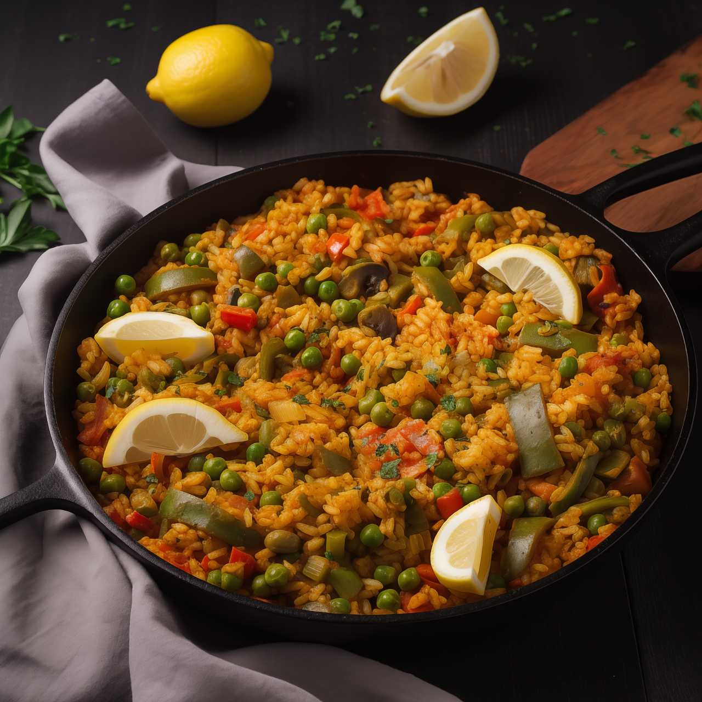

Mediterrane Gemüse-Reispfanne
20 Min.
simpel
15.12.2025
Zutaten für
| 130 g | Champignons |
| 330 g | Zucchini |
| 2 | Paprikaschoten |
| 3 | Frühlingszwiebeln |
| 230 g | Möhren |
| 170 g | Cocktailtomaten |
| 2 EL | Olivenöl |
| Thymian, Salz, Zitronensaft, Pfeffer |
Zubereitung
ca. 20 Min.
Gesamtzeit ca. 35 Min.
-
Gemüse vorbereiten:
Die Cocktailtomaten, Zucchini, Möhren, Paprika, Frühlingszwiebeln und Champignons waschen. Die Möhren kurz blanchieren, sie sollten noch Biss haben. Die Zucchini längs halbieren und das weiche Innere mit einem Löffel entfernen. -
Gemüse schneiden:
Zucchini, Möhren, Champignons und Paprika in nicht zu dünne Scheiben bzw. Streifen schneiden. Die Cocktailtomaten halbieren oder vierteln. Die Frühlingszwiebeln in ca. 3cm lange Stücke schneiden und das ganze Gemüse in einer großen Schüssel mischen. -
Gemüse anbraten:
Die Hälfte des vorbereiteten Gemüses zusammen mit dem Thymian in etwas Olivenöl in einer Pfanne anbraten, bis es leicht Farbe bekommt. Danach in eine Schüssel geben und mit dem restlichen Gemüse wiederholen, bis alles Gemüse angebraten ist. -
Marinade zubereiten:
Olivenöl, Zitronensaft, Salz und etwas Pfeffer verrühren. -
Gemüse marinieren und servieren:
Das angebratene Gemüse mit der Marinade übergießen und mindestens 10 Minuten ziehen lassen. Danach warm servieren oder abkühlen lassen und als Beilage oder leichtes Hauptgericht genießen.
Rezept erstellt von
 Lisa
Lisa